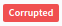

The repository screen of Koodous let you search through millions of packages looking for any particular application. Once you have found your "target", you can access the detailed view, where you can vote, comment, download it and ask for an on-demand analisys.
Searching
In the repository screen you can search for any APK in the system. Depending of the fields, the search will return APKs with an exact or partial match:
Partial match fields
App name Developer
Exact match fields
SHA256 SHA1 MD5 Package
When searching for a particular hash, you must enter exactly the number of characters it has. This means that if you search for a partial hash, like 0bb9246deae4d3210e06791e9999c45 (notice the last character is left), the search engine will look in any partial match field, probably giving you no results at all. The search engine neither do partial searchs on package names.
At the moment there is no way to tell the search engine what are you looking for. So, if you look for a string i.e. Rockstar, you will have applications and developers which has this string somewhere in its name. Look at the next section!
Advanced search
We provide an advance search to do more easy the search of malware o interesting samples. You can filter by tags, filesize, user's rating, ... For instance, if we can find applications with a rating less than -1 and from GooglePlay, you can use rating:-1- and tag:googleplay. This is usefull to detect applications rated by users that maybe are not detected by any ruleset.
Another interesting search can be: package_name:"com.whatsapp" and not developer:"WhatsApp Inc."
the following table describe each of search modifiers availables, you can combine these as you can with and, or and not.
| Attribute | Modificator | Description |
|---|---|---|
| Rating | rating: | This modificator is used to obtain application with certain users rating. You can get applications with score greater or equal than 2 with rating:2+. Or more interesting, with score equal or less than -1 rating:-1- |
| Developer | developer: | The developer of each application is extracted from the certificate, and you can search by these using this modificator. For instance: developer:"WhatsApp Inc." |
| Package Name | package_name: | Each application must have an unique package name, and each update must have the same name. Example: package_name:com.whatsapp |
| App Name | appname: | The name of the application, for instance: appname:WhatsApp |
| Filesize | size: | The filesize of the APK file is, in many times, an indicator of their purpose. You can filter by this parameter with, for instance, for files greater or equal than 1MB: size:1MB+, or less than 700KB: size:700KB-. |
| Tag | tag: | We tag the samples with interesting word and each user can set by one or more tag to any sample, and you can find for this. For example, finding sample that we know come from Google Play: tag:googleplay or that any user has tagged as banker tag:banker |
| Certificate | cert: or certificate: | Each application (as well the well-formed) has signed by a certificate. We have each certificate indexed and you can find by that, concretly by its sha1. For instance, we know that official Twitter application has 40F3166BB567D3144BCA7DA466BB948B782270EA as sha1 certificate, then, we can found all versions of the official Twitter application with this: cert:40F3166BB567D3144BCA7DA466BB948B782270EA or certificate:40F3166BB567D3144BCA7DA466BB948B782270EA if you want to write a bit more :). |
| Installed on devices | installed | This search modifier has no parameters. It search only APKs that are installed or sometime was installed in some device. Example: installed or not installed |
| Detected by community | detected | This search modifier has no parameters. It search only APKs that has been detected by Koodous community. Example: detected or not detected |
The detailed view
Entering on the detailed view of an APK is as easy as clicking over its name or SHA256 hash. Once inside, it is possible to see more information, vote it, write comments, request an analysis or download it.
The comment system is placed on a tab and is pretty straight-forward: write your findings or opinions and push Send. Just remember to be respectful with the rest of the community, do constructive critics and follow the standart netiquette.
The up and down arrows on the right of the application image let you vote if that specific application is trustworthy or not. Please notice is not about how you like an application, but about how safe you think it is.
Many APKs contain the  tag. This only mean that we don't detect a dex file OR a resources file OR a certificate. Many service apps installed on devices by default doesn't have a certificate, for instance, and we consider that it is corrupted.
You can download and send an analysis request using the specific buttons above the app image.
Info tabs
- The General info tab shows a brief summary of the most identificative information.
- Depending on the app, another Metadata tab will appear showing a more complete report with information from Google Play, such as ratings and categories.
- If the APK has been analysed, another Analysis tab will show the report, also in json format.